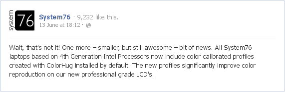

In The News
2014-06-20: Joseph Coco compares the ColorHug and the Spyder3
Joseph Coco reviewed the ColorHug colorimeter, comparing results to a Spyder3 device.
2014-01-20: Hughski Ltd announces new OpenHardware ColorHug+ device!
Hughski Limited announced this week that it is producing a new ColorHug+ device that is able to accurately profile displays and printers. It is planned an upgrade to the original ColorHug device that was only capable of profiling some types of display.
2013-06-13: System76 using ColorHug on all new laptops!
System76, the company that makes and supports various models of Ubuntu Linux laptops is now using the ColorHug on all new laptops by default:

2013-06-05: Fuzzy Tolerance #25: Rapid Fire
Fuzzy Tolerance #25: Rapid Fire reviewed the ColorHug and found it did a pretty good job at calibrating his panels.
2013-03-14: Open Source Junction: Open Source Hardware meets Open Source Software
At OSJ I gave a presentation about ColorHug and participated in quite a few discussion panels.
2012-10-08: Oggcamp 2012
At Oggcamp 2012 I gave a presentation about ColorHug and also gave a small interview.
2012-07-20: HD Nation
A nice review from the guys at HD Nation.
2012-06-10: LGM 2012
At LGM 2012 I gave a presentation about ColorHug progress.
2012-05-23: Review By Wolfgang Lonien
Lots of discussion from the blog of Wolfgang Lonien.
What's included
Already have an original ColorHug?
Get some free stuff to upgrade your device with the latest accessories.